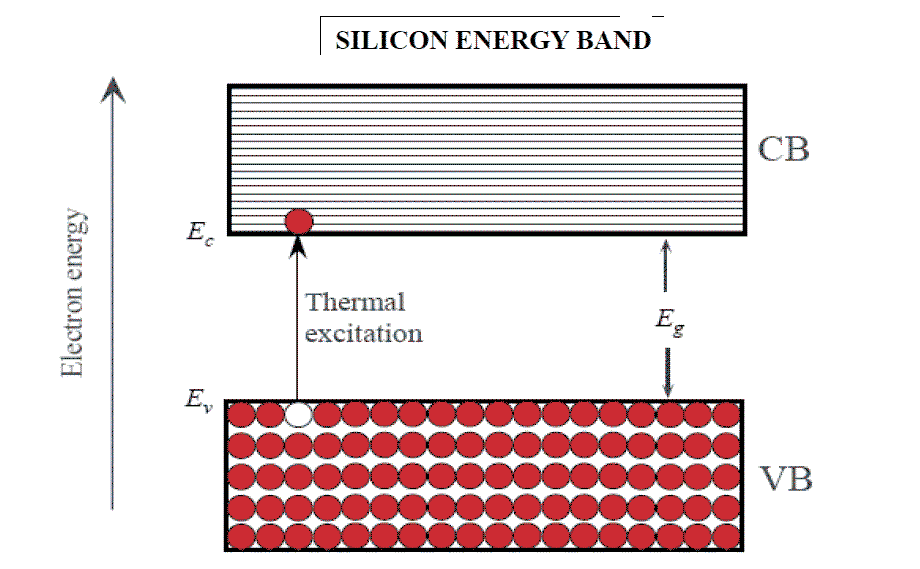
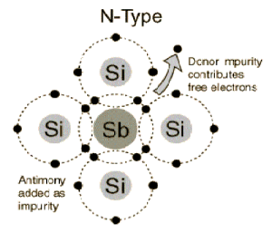

The materials can be classified on the basis of energy gap between their valence band and conduction band. The valence band is the band consisting of free valence electron and the conduction band is empty band. Conduction takes place when an electron jumps from valence band to conduction band and the gap between these two bands is energy gap. Wider the gap between the bands, higher the energy it requires to shift the electron to conduction band.
In case of conductors, this energy gap is absent or in other words conduction band and valence band overlap each other. Thus electron requires minimum energy to jump from valence band, e.g. Silver, Copper and Aluminium. In insulators, this gap is very large. Therefore, it requires large amount of energy to shift an electron from valence to conduction band. Thus insulators are poor conductors of electricity, e.g. mica, diamond.
Semiconductors have energy gap in between conductors and insulators (~1 eV) and thus require energy more than conductors but less than insulators. They don’t conduct electricity at low temperature but as temperature increases conductivity increases e.g. silicon and germanium. This is the most basic theory of semiconductor.
The materials that are neither conductor nor insulator with energy gap of about 1 eV (electron volt) are called semiconductors. Most common type of materials that are used as semiconductors are germanium (Ge) and silicon (Si) because of their property to withstand high temperature. For Si and Ge energy gap is given as,
- Eg = 1.21 - 3.6 X 10-4T eV (for Si)
- Eg = 0.785 - 2.23 X 10-4T eV (for Ge)
Where, T = absolute temperature in oK
Assuming room temperature to be 300 oK, Eg = 0.72eV for Ge and 1.1eV for Si.
At room temperature resistivity of semiconductor is in between insulators and conductors. Semiconductors show negative temperature coefficient of resistivity i.e. its resistance decreases with increase in temperature.
Both Si and Ge are elements of IV group i.e. both elements have 4 valence electrons. Both form covalent bond with neighbouring atom. At absolute zero temperature both behave as insulator i.e. the valence band is full while
conduction band is empty but as temperature is raised more and more covalent bonds break and electrons are set free and jump to conduction band.

Energy band diagram of a semiconductor. CB is the conduction band and VB is the valence band. At 0° K, the VB is full with all the valence electrons.
Intrinsic Semiconductors
As per theory of semiconductor, semiconductor in its pure form is called as intrinsic semiconductor. In pure semiconductor number of electrons (n) is equal to number of holes (p) and thus conductivity is very low as valence electrons are covalent bonded. In this case we write n = p = ni, where ni is called the intrinsic concentration. It can be shown that ni can be written
ni = n0T3/2 exp(-VG /2VT)
Where, n0 is a constant, T is the absolute temperature, VG is the semiconductor band gap voltage, and VT is the thermal voltage.
The thermal voltage is related to the temperature by VT = kT/q
Where, k is the Boltzmann constant (k = 1.381 × 10 − 23 J/K).
In intrinsic semiconductors conductivity (σ) is determined by both electrons (σe) and holes (σh) and depends on the carrier density.
σe = neμe σh = peh
Conductivity, σ = σe + σh = neμe + peμh = Ne (μe + μh)
Where n, p = numbers of electrons and holes respectively.
μh, μe = mobility of free holes and electrons respectively
N = n = p
e = charge on carrier
Extrinsic Semiconductors
As per theory of semiconductor, impure semiconductors are called extrinsic semiconductors. Extrinsic semiconductor is formed by adding a small amount of impurity. Depending on the type of impurity added we have two types of semiconductors: N - type and P-type semiconductors. In 100 million parts of semiconductor one part of impurity is added.
N-type Semiconductor
In this type of semiconductor majority carriers are electrons and minority carriers are holes. N - type semiconductor is formed by adding pentavalent ( five valence electrons) impurity in pure semiconductor crystal, e.g. P. As, Sb.
semiconductor " width="300" height="257" class="alignright size-medium wp-image-5740" />
Four of the five valence electron of pentavalent impurity forms covalent bond with Si atom and the remaining electron is free to move anywhere within the crystal. Pentavalent impurity donates electron to Si that’s why N- type impurity atoms are known as donor atoms. This enhances the conductivity of pure Si. Majority carriers are electrons therefore conductivitry is due to these electrons only and is given by,
σ = neμe
P-type Semiconductors
In this type of semiconductor majority carriers are holes and minority carriers are electrons. P- type semiconductor is formed by adding trivalent ( three valence electrons) impurity in pure semiconductor crystal, e.g. B, Al Ba.
Three of the four valence electron of tetravalent impurity forms covalent bond with Si atom. This leaves an empty space which is referred to as hole. When temperature is raised electron from another covalent bond jumps to fill this empty space. This leaves a hole behind. In this way conduction takes place. P- type impurity accepts electron and is called acceptor atom. Majority carriers are holes and therefore conductivity is due to these holes only and is given by,
σ= neμh
 by
by {kind=link}
{kind=link}
{kind=link}